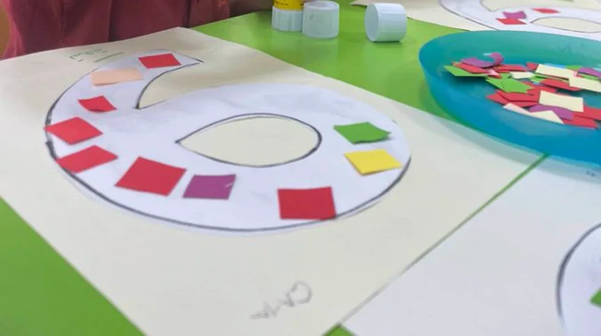
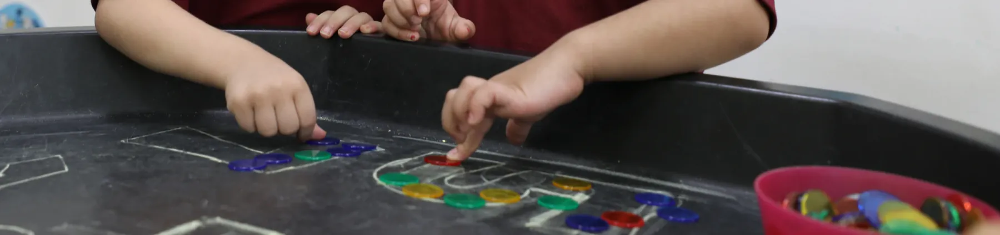
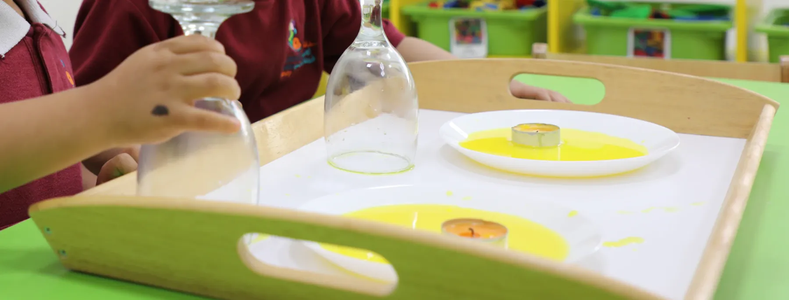
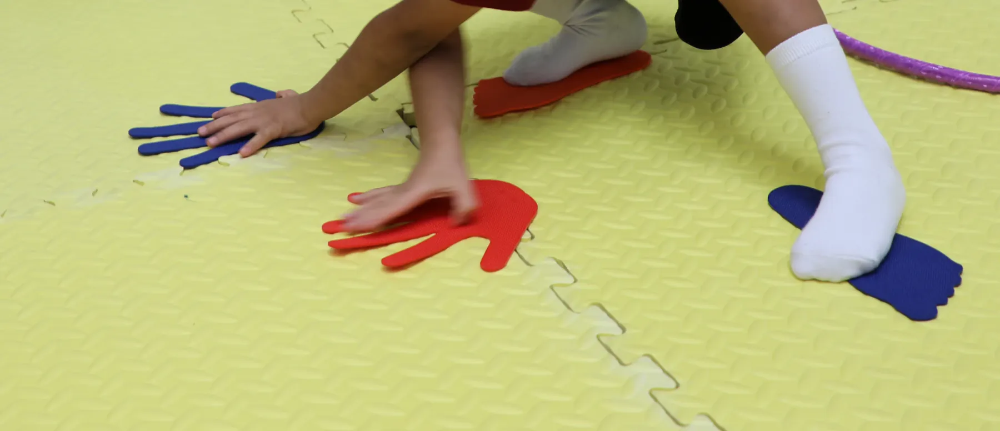

لعب حرّ وإبداعي
صلصال وتلوين وكولاج وغراء ورغوة وماء. نقدّم أنشطة متنوعة فيها الكثير من اللعب الإبداعي، لأن هكذا يتعلّم الصغار أفضل.
Creative Kids Academy Nursery
حضانة بريطانية بمنهج EYFS في مدينة الضباط، أبوظبي. للأطفال من عمر شهرين حتى 4 سنوات.
أعزاءنا أولياء الأمور، ما يتعلّمه الطفل في سنواته الخمس الأولى يبقى معه ويشكّل بقية حياته. ويشرّفنا أن تأتمنونا على طفلكم في هذه المرحلة.
أكاديمية الأطفال المبدعين، ملتزمون بالتميّز

ركن القراءة، Reading Area، بالعربية والإنجليزية.

حلقة الصباح على سجادة الحروف.
كل طفل ينمو بسرعته الخاصة، لذلك نضع الأطفال حسب مرحلة نموهم وليس أعمارهم فقط.
رعاية وراحة وثقة، ولعب يعتمد على الحواس. تصلكم كل يوم ملاحظات عن الرضعات وتغيير الحفاضات.

لعب الأدوار والقراءة المشتركة وحلقة الصباح، حيث يبدأ الأطفال بتكوين الجمل.

اللعب الجماعي وابتكار الألعاب واكتشاف السبب والنتيجة والعالم من حولهم.

برنامج Letters and Sounds وJolly Phonics في الفصل الأخير، والأرقام، والثقة للتعامل مع التغيير.

نحافظ على عدد قليل من الأطفال لكل موظفة لنعطي كل طفل اهتماماً أكبر. ولكل طفل مربية مسؤولة تتابع تقدّمه.
موظفة واحدة لكل عدد الأطفال المذكور.
اللعب ليس متعة فقط، بل يساعد الأطفال على فهم العالم من حولهم. هذه بعض الأشياء التي سيعيشها طفلكم معنا.
صلصال وتلوين وكولاج وغراء ورغوة وماء. نقدّم أنشطة متنوعة فيها الكثير من اللعب الإبداعي، لأن هكذا يتعلّم الصغار أفضل.

كثير من أطفال الإمارات يكبرون بين أكثر من لغة. نعلّم بالعربية والإنجليزية، وحصص التربية الإسلامية والقرآن يومية، ليكون الطفل جاهزاً لأي مدرسة.

مكاننا مشرق وواسع، بمساحات داخلية وخارجية كبيرة: قاعة لعب بالشبكات والحلقات، وساحة مظللة على العشب.

الأطفال يأتون بالأفكار والمواضيع، ومعلّماتنا يستمعن ثم يضفن أفكاراً علمية ولغوية ورياضية تأخذهم أبعد.
ركن القراءة
 ركن البناء
ركن العالم الصغير
غرفة الرضّع
قاعة اللعب
الساحة الخارجية
ركن البناء
ركن العالم الصغير
غرفة الرضّع
قاعة اللعب
الساحة الخارجية
يهمّنا جداً أن تتركوا أطفالكم عندنا وأنتم مطمئنون. وهكذا نحرص على ذلك.

وموظفاتنا مدرّبات على الإسعافات الأولية والتعامل مع الحساسية.
لا يستلم الطفل إلا الأشخاص الذين تحددونهم. أي شخص آخر يجب أن تبلغونا به مسبقاً وأن يُبرز هويته، وإن كان عندنا أي شك لا نسلّم الطفل.
تتابع تقدّم طفلكم وتساعده على التأقلم، تحت إشراف معلّمة الصف. الأطفال دائماً تحت النظر أو على مسمع منّا.
كل أماكن اللعب في الداخل والخارج آمنة، وكل الألعاب تُفحص بحثاً عن أي كسر أو عطل.
موظفاتنا مدرّبات على سلامة الغذاء، ونساعدكم في تجهيز صندوق غداء متوازن يحبه طفلكم.
من صفحة أولياء الأمور على cka.ae
من أفضل حضانات ابوظبي. ادارة ورعاية ونظافة واهتمام بالاطفال واولياء الأمور. الموظفين متعاونين جداً والأنشطة متعددة يومية وأسبوعية لتنمية مهارات الطفل.
التركيز على تدريس منهج اللغة العربية وتعليم القرآن يحسب للحضانة ومجهود تشكرون عليه.. فعاليات كل خميس مشوقه للأطفال وتساهم في تفريغ طاقاتهم.. كل الشكر
حضانة متميزة وعلى الشارع الرئيسي يسهل توصيل الأطفال وتمتلك مساحة داخلية واسعة ومنطقة العاب … هناك مواقف خارجية والإدارة تتميز بالحرفية وتهتم بشؤون أولياء أمور الأطفال
أشكر جهود القائمين على الحضانه، و احب تعزيز اللغه العربيه و بشكل كبير في تعليم الطفل و حصه القران الكريم
اتصلوا على 02 558 5583 (أو الجوال 050 241 1538) ونحدد لكم موعد زيارة.
تعالوا وتحدثوا مع مديرة الحضانة، وشوفوا الصفوف وقاعة اللعب والساحة، واسألوا عن كل شيء.
في الأيام الأولى يمكنكم البقاء مع طفلكم حتى يتأقلم، وفي أول أسبوعين تلتقون بمعلّمة الصف للحديث عن احتياجاته.
مؤسسة التنمية الأسرية، مدينة الضباط، أبوظبي
ص.ب 42974، أبوظبي، الإمارات
| الاثنين | 7 ص – 3 م |
| الثلاثاء | 7 ص – 3 م |
| الأربعاء | 7 ص – 3 م |
| الخميس | 7 ص – 3 م |
| الجمعة | 7 ص – 1 م |
أو راسلونا على reception@cka.ae